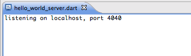
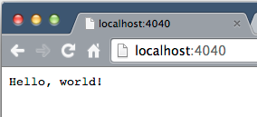
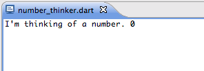
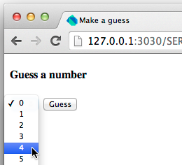
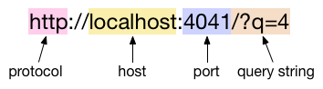
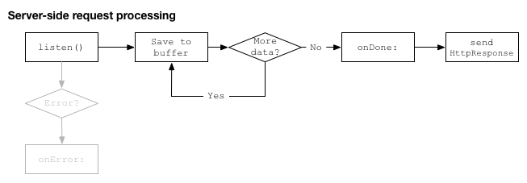
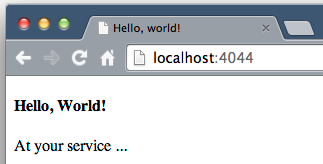
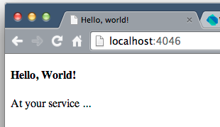

Write HTTP Clients & Servers
Communicate over the internet
HTTP (Hyper-Text Transfer Protocol) is a communication protocol used to send data from one program to another over the internet. At one end of the data transfer is a server and at the other end is a client. The client is often browser-based (either a user typing in a browser or a script running in a browser), but might also be a standalone program.
The server binds to a host and port (it makes an exclusive connection to an IP address and a port number). Then the server listens for requests. Because of Dart’s asynchronouse nature, the server can handle many requests at a single time, as follows:
- Server listens
- Client connects
- Server accepts and receives request (and continues to listen)
- Server can continue to accept other requests
- Server writes response of request or several, possibly interleaved, requests
- Server finally ends(closes) the response(s).
In Dart, the dart:io library contains the classes and functions you need to write HTTP clients and servers. In addition, the http_server package contains some higher-level classes that make it easier to write clients and servers.
This tutorial provides several examples that show how easy it is to write Dart HTTP servers and clients. Beginning with the hello world of servers, you learn how to write the code for a server from binding and listening to responding to requests. You also learn about the client-side: making different kinds of requests (GET and POST), writing browser-based and command-line clients.
- Get the source code
- Run the hello world server
- Binding a server to a host and port
- Using HTML forms to make GET requests
- Listening for and handling requests
- Making a POST request from a standalone client
- Handling a POST request in a server
- Using the http_server package
- Using https with bindSecure()
- Other resources
- What next?
Get the source code
- Get the Dart Tutorials example code.
-
In Dart Editor, open the
bin/httpserverdirectory, which contains the sources you need for this tutorial.
Note: These examples are compatible with Dart 1.3.
Run the hello world server
Example file for this section: hello_world_server.dart.
Let’s begin with a small server that responds to all requests
with the string Hello, world!
-
In the
bin/httpserverdirectory, right-clickhello_world_server.dartand choose Run from the menu.
-
Then, in any browser, enter
localhost:4040. The browser displaysHello, world!
In this case, the server is a Dart program and the client is the browser you used. However, you can write client programs in Dart—either a browser-based client script, or a standalone program.
A quick glance at the code
In the code for the hello world server,
an HTTP server binds to a host and port,
listens for HTTP requests, and writes a response.
Note that the program imports
the dart:io library, which contains the HTTP-related
classes both for server-side programs and for
client-side programs (but not for browser-based scripts).
import 'dart:io';
main() {
HttpServer.bind(InternetAddress.LOOPBACK_IP_V4, 4040)
.then((HttpServer server) {
print('listening on localhost, port ${server.port}');
server.listen((HttpRequest request) {
request.response.write('Hello, world!');
request.response.close();
});
}).catchError((e) => print(e.toString()));
}
The next few sections cover server-side binding, making a client-side GET request, listening, and responding.
Binding a server to a host and port
Example for this section: hello_world_server.dart.
The first line of code in main()
uses HttpServer.bind() to create an
HttpServer
object and bind it to a host and port.
HttpServer.bind(InternetAddress.LOOPBACK_IP_V4,4040) .then((HttpServer server) { ...
The bind() method uses a Future to run asynchronously.
When the bind is successful, the callback of then()
is called with the new HttpServer object as a parameter.
Hostname
The first parameter of bind() specifies the hostname.
You can specify a particular hostname or IP address as a String.
Alternatively, you can specify the host using these predefined values
provided by the
InternetAddress class:
| Value | Use case |
|---|---|
| LOOPBACK_IP_V4 or LOOPBACK_IP_V6 |
The server listens for client activity on the loopback address, which is effectively localhost. Uses either version 4 or 6 of the IP protocol. These are used primarily for testing. We recommend that you use these values instead of localhost or 127.0.0.1. |
| ANY_IP_V4 or ANY_IP_V6 |
The server listens for client activity on the specified port on any IP address. Uses either version 4 or 6 of the IP protocol. |
By default, when using a V6 internet address, a V4 listener is used as well.
Port
The second parameter to bind() is an integer
that specifies the port.
The port uniquely identifies a service on the host computer.
Port numbers below 1024 are reserved (except for 0)
for standard services.
For example, FTP data transfer typically runs on port 20,
quote of the day on port 17, and HTTP on port 80.
Your program should use port numbers from 1024 and higher.
If the port is already in use,
the connection for your server will be refused.
Listening for requests
The server begins listening for requests by calling the
listen() method.
For each received request, the callback of listen(),
highlighted below, is called with an
HttpRequest
object.
... server.listen((HttpRequest request) {request.response.write('Hello, world!');request.response.close();}); ...
You’ll learn more about what the HttpRequest object contains and how to write the response in the section Listening for and handling requests. But first, let’s look at one way a client generates a request.
Using HTML forms to make GET requests
Example files for this section: number_thinker.dart and make_a_guess.html.
This section features a command-line server that
randomly chooses a number between 0 and 9.
The client is a basic HTML web-page, make_a_guess.html,
that you can use the to guess the number.
Try it!
-
Run the number thinker server
In Dart Editor, right-click
number_thinker.dartand choose Run from the menu.
-
Open the HTML page
In Dart Editor, right-click
make_a_guess.htmland select Run in Dartium. -
Make a guess
Choose a number and press the Guess button.

Note the components of the URL on the results page.

No Dart code is involved in the client. The client request is made from the browser to the Dart server through an HTML form within make_a_guess.html, which provides an automatic way to formulate and send client HTTP requests. The form contains the pull-down list and the button. The form also specifies the URL, which includes the port number, and the kind of request (the request method). It might also include elements that build a query string. (To learn more about forms, see Get Input from a Form.)
Here’s the HTML code for the form in make_a_guess.html:
1<formaction="http://localhost:4041"2method="GET">3<selectname="q"> <option value="0">0</option> <option value="1">1</option> <option value="2">2</option> ... <option value="9">9</option> </select>4<inputtype="submit"value="Guess"> </form>
1 URL to send the request to.
2
The kind of request, here a GET request. Other common
kinds of requests include POST, PUT, and DELETE.
3 Any element within the form that has a name becomes a parameter in the query string.
4 When pressed, the submit button formulates the request based on the content of the form and sends it.
A RESTful GET request
REST (REpresentational State Transfer) is a set of principles for designing Web services. Well-behaved HTTP clients and servers observe the REST principles defined for GET requests.
A GET request:
- only retrieves data
- doesn’t change the state of the server
- has length limits
- can send query strings in the URL of the request
The client in this example makes a REST-compliant GET request.
Listening for and handling requests
Example files for this section: number_thinker.dart and make_a_guess.html.
Now that you’ve seen the browser-based client for this example,
let’s take a look at the Dart code for the number thinker server,
starting with main().
Once again the server binds to a host and port.
Here, the callback of then()
is a top-level function
named listenForRequests().
import 'dart:io';
import 'dart:math' show Random;
int myNumber = new Random().nextInt(10);
void main() {
print("I'm thinking of a number. $myNumber");
HttpServer.bind(InternetAddress.LOOPBACK_IP_V4, 4041)
.then(listenForRequests)
.catchError((e) => print (e.toString()));
}
...
The code for listenForRequests() calls listen() so that
the HttpServer starts to listen on the host and port for requests.
When a request comes in, the server creates an HttpRequest object
and passes it to the callback of listen().
Thus, as requests come in, the HttpServer object provides
a stream of HttpRequest objects.
Note that the HttpServer class implements
Stream.
...
listenForRequests(HttpServer _server) {
1 _server.listen((HttpRequest request) {
...
},
2 onDone: () => print('Done with requests.'),
3 onError: (e) => print(e.toString() );
}
...
The listen() method takes one required and two optional parameters:
1 A callback function, which is called for each client request.
2
onDone is called when the server is shut down.
3
onError is called if an error occurs.
An HttpRequest object has many properties that provide information about the request. The following table lists some useful properties:
| Property | Information |
|---|---|
method |
A String: ‘GET’, ‘POST’, ‘PUT’, and so on. |
uri |
A Uri object: scheme, host, port, query string, and other information about the requested resource. |
response |
An HttpResponse object: where the server writes its response. |
headers |
An HttpHeaders object: the headers for the request, including ContentType, content length, date, and so on. |
Using the method property
The code below from the number thinker example uses the HttpRequest method
property to determine what kind of request has been received.
This server handles only GET requests.
listenForRequests(_server) {
_server.listen((HttpRequest request) {
if (request.method == 'GET') {
handleGet(request);
} else {
request.response.statusCode = HttpStatus.METHOD_NOT_ALLOWED;
request.response.write("Unsupported request: ${request.method}.");
request.response.close();
}
},
onDone: () => print('No more requests.'),
onError: (e) => print(e.toString()) );
}
Using the uri property
Typing a URL into a browser generates a GET request, which simply requests data from the specified resource. It can send a minimal amount of data along with the request through a query string attached to the URI.
void handleGet(HttpRequest request) {
String guess = request.uri.queryParameters['q'];
...
}
Use the uri property from the HttpRequest object to get a
Uri object
that contains the information about the URL typed by the user.
The queryParameters property of the Uri object is a Map containing
the components of the query string.
Refer to the desired parameter by name.
This example uses q to identify the guessed number.
Setting the status code for the response
The server should set the status code to indicate the success or
failure of the request. Earlier you saw the number thinker set
the status code to METHOD_NOT_ALLOWED to reject non-GET requests.
Later in the code,
to indicate that the request was successful and the response is complete,
the number thinker server sets the HttpResponse status code to HttpStatus.OK.
void handleGet(HttpRequest request) {
String guess = request.uri.queryParameters['q'];
request.response.statusCode = HttpStatus.OK;
...
}
HttpStatus.OK and HttpStatus.METHOD_NOT_ALLOWED are
one of many pre-defined status codes in the
HttpStatus class.
Other useful pre-defined status codes are
HttpStatus.METHOD_NOT_ALLOWED
and
HttpStatus.NOT_FOUND (your classic 404).
In addition to statusCode,
the HttpResponse object has other useful properties:
| Property | Information |
|---|---|
contentLength |
The length of the response. -1 means the length is not known in advance. |
cookies |
A List of Cookies to set in the client. |
encoding |
The Encoding used when writing strings, like JSON and UTF-8. |
headers |
The response headers, an HttpHeaders object. |
Writing the response to the HttpResponse object
Every HttpRequest object has a corresponding HttpResponse object. The server sends data back to the client through the response object.
Use one of the HttpResponse write methods
(write(), writeln(), writeAll(), or writeCharCodes())
to write the response data to the HttpResponse object.
Or connect the HttpResponse object to a stream via addStream
and write to the stream.
Close the object when the response is complete.
Closing the HttpResponse object,
sends the data back to the client.
void handleGet(HttpRequest request) {
...
if (guess == myNumber.toString()) {
request.response.writeln('true');
request.response.writeln("I'm thinking of another number.");
request.response.close();
...
}
}
Making a POST request from a standalone client
Example files for this section: basic_writer_server.dart and basic_writer_client.dart.
In the hello world and the number thinker examples, the browser generated simple GET requests. For more complex GET requests and other kinds of requests, such as POST, PUT, or DELETE, you need to write a client program, of which there are two kinds:
-
A standalone client program, which uses the HttpClient class from
dart:io. -
A browser-based client, which uses API from dart:html. This tutorial does not cover browser-based clients. To look at code for a browser-based client and related server, see note_client.dart, note_server.dart, and take_note.html. Also, check out the Get Input from a Form tutorial.)
Let’s look at a standalone client, basic_writer_client.dart,
and its server basic_writer_server.dart.
The client makes a POST request
to save JSON data to a server-side file.
The server accepts the request and saves the file.
Try it!
Run the server and client on the command line.
-
First the server:
$ dart bin/httpserver/basic_writer_server.dart
-
Then the client:
$ dart bin/httpserver/basic_writer_client.dart
-
The server writes the data to
file.txt:{"name":"Han Solo","job":"reluctant hero","BFF":"Chewbacca","ship":"Millennium Falcon","weakness":"smuggling debts"}
The client creates an HttpClient object and uses the
post() method to make the request.
Making a request involves two Futures:
-
The
post()method establishes a network connection to the server and returns the first Future, which returns an HttpClientRequest object. -
The client composes the request object and closes it. The
close()method sends the request to the server and returns the second Future.
import 'dart:io';
import 'dart:convert' show UTF8, JSON;
main() {
Map jsonData = {
'name': 'Han Solo',
'job': 'reluctant hero',
'BFF': 'Chewbacca',
'ship': 'Millennium Falcon',
'weakness': 'smuggling debts'
};
1 new HttpClient().post(InternetAddress.LOOPBACK_IP_V4.host, 4049, '/file.txt')
2 .then((HttpClientRequest request) {
3 request.headers.contentType = ContentType.JSON;
4 request.write(JSON.encode(jsonData));
5 return request.close();
})
6 .then((HttpClientResponse response) {
7 response.transform(UTF8.decoder).listen((contents) {
print(contents);
});
});
}
1
The post() method requires the host, port, and the path to the requested
resource.
In addition to post(), the HttpClient class provides functions
for making other kinds of
requests, including postUrl(), get(), and open().
2
When the post() connection succeeds,
the callback of the first Future receives an
HttpClientRequest
object.
3
An HttpClientRequest object has an HttpHeaders object,
which contains the request headers.
For some headers,
like contentType,
HttpHeaders has a property specific to that header.
For other headers, use the set() method to
put the header in the HttpHeaders object.
4
The client writes data to the request object using write().
The encoding, JSON in this example,
matches the type specified in the ContentType header.
5
The close() method sends the request to the server
and returns a Future
6 When the client receives the response, the second Future completes with an HttpClientResponse object. In this example, the client program decodes and prints the text of the response.
7
The response from the server is encoded in UTF-8.
Use a transformer defined in the dart:convert library
to convert the data into regular Dart string format.
A RESTful POST request
Similar to GET requests, REST provides guidelines for POST requests.
A POST request:
- creates a resource (in this example, a file)
- uses a URI that has a structure similiar to file and directory pathnames; for example, the URI has no query string
- transfers data as JSON or XML
- has no state and does not change the state of the server
- has no length limits
Bonus code:
If you would like to see some client code that
makes GET requests,
check out the code for number_guesser.dart.
It’s a standalone client for the number thinker server
that makes periodic guesses until it guesses correctly.
Handling a POST request in a server
Example files for this section: basic_writer_server.dart and basic_writer_client.dart.
An HttpRequest object is a Stream of lists of bytes (Stream<List<int>>).
To get the data sent from the client,
listen for data on the HttpRequest object.
If the request from the client contains a large amount of
data, the data might arrive in multiple chunks.
In our next example, basic_writer_server.dart,
the server writes the chunks to a StringBuffer.
After the server receives all the data,
the callback of onDone is called.

The basic_writer_server.dart file implements
a server that follows this pattern.
import 'dart:io';
import 'dart:convert';
void main() {
HttpServer.bind(InternetAddress.LOOPBACK_IP_V4, 4049).then((server) {
server.listen((req) {
ContentType contentType = req.headers.contentType;
BytesBuilder builder = new BytesBuilder();
if (req.method == 'POST' &&
1 contentType != null &&
contentType.mimeType == 'application/json') {
req.listen((buffer) {
2 builder.add(buffer);
3 }, onDone: {
// write to a file, get the file name from the URI
String jsonString = UTF8.decode(builder.takeBytes());
4 String filename = req.uri.pathSegments.last;
new File(filename).writeAsString(jsonString,
mode: FileMode.WRITE).then((_) {
5 Map jsonData = JSON.decode(jsonString);
req.response.statusCode = HttpStatus.OK;
req.response.write('Wrote data for ${jsonData['name']}.');
req.response.close();
});
});
} else {
req.response.statusCode = HttpStatus.METHOD_NOT_ALLOWED;
req.response.write("Unsupported request: ${req.method}.");
req.response.close();
}
});
});
}
1
The request object has an HttpHeaders object.
Recall that the client set the contentType header to JSON (application/json).
This server rejects requests that are not JSON-encoded.
2
A POST request has no limit on the amount of data it can send
and the data might be sent in multiple chunks.
Furthermore, JSON is UTF-8, and UTF-8 characters can be encoded over
multiple bytes.
Therefore, the server uses a
BytesBuilder
object to collect the data until all the data
is delivered, then the callback of onDone is called.
3
The callback of onDone writes the data to the file
specified by the client in the Uri.
4
The URL for the request is localhost:4049/file.txt.
The code req.uri.pathSegments.last extracts the file name
from the URI: file.txt.
5 The data sent by the client is JSON formatted. The server decodes it using the JSON codec available in the dart:convert library.
A note about CORS Headers
If you want to serve clients that are running on a different origin (a different host or port), you need to add CORS headers. The following code, take from note_server.dart, allows POST and OPTIONS requests from any origin. Use CORS headers with caution, because they can open your network up to security risks.
void addCorsHeaders(HttpResponse res) {
req.response.headers.add('Access-Control-Allow-Origin', '*');
res.response.headers.add('Access-Control-Allow-Methods', 'POST, OPTIONS');
res.response.headers.add('Access-Control-Allow-Headers',
'Origin, X-Requested-With, Content-Type, Accept');
}
For more information, refer to Wikipedia’s article Cross-origin resource sharing.
Using the http_server package
Example files for this section: mini_file_server.dart and static_file_server.dart.
For some higher-level building blocks,
we recommend that you try the
http_server
pub package,
which contains a set of classes that,
together with the HttpServer class in the dart:io library,
make it easier to implement HTTP servers.
In this section, we compare a server written using API only from dart:io to a server with the same functionality written using dart:io together with http_server.
You can find the first server in mini_file_server.dart.
It responds to all requests by returning the contents of the
index.html file in the same directory as its source.
Try it!
-
Run the server on the command line:
$ dart bin/httpserver/mini_file_server.dart
-
Type
localhost:4044into the browser. The server displays an HTML file:
Here’s the code for mini file server:
import 'dart:io';
main() {
HttpServer.bind(InternetAddress.LOOPBACK_IP_V4, 4044).then((server) {
server.listen((HttpRequest req) {
File file = new File('index.html');
file.exists().then((bool found) {
if (found) {
file.openRead()
.pipe(req.response) // HttpResponse type.
.catchError((e) => print(e.toString()));
} else {
req.response.statusCode = HttpStatus.NOT_FOUND;
req.response.close();
}
});
});
});
}
This code determines if the file exists, and if it does, opens the file and pipes the contents to the HttpResponse object.
The second server,
whose code you can find in
basic_file_server.dart,
uses the http_server package.
Try it!
-
Run the server on the command line:
$ dart bin/httpserver/basic_file_server.dart
-
Type
localhost:4046into the browser. The server displays the same index.html file as the previous:
In this server, the code for handling the request is much shorter, because the VirtualDirectory class handles the details of serving the file.
import 'dart:io';
import 'package:http_server/http_server.dart';
void main() {
VirtualDirectory staticFiles = new VirtualDirectory('.');
HttpServer.bind(InternetAddress.LOOPBACK_IP_V4, 4046).then((server) {
server.listen((req) {
staticFiles.serveFile(new File('index.html'), req);
});
});
}
Here, the requested resource, index.html, is served by
the serveFile() method in the VirtualDirectory class.
You don’t need to write code to open a file, and pipe its contents
to the request.
Below is code for another file server that also uses the http_server
package, static_file_server.dart.
This server serves any file from the server’s directory
or subdirectory.
Run the file server, either on the command line or in Dart Editor,
and test it with this URL localhost:4048/file.txt.
Change file.txt to other filenames within the directory.
import 'dart:io';
import 'package:http_server/http_server.dart';
import 'package:path/path.dart';
void main() {
var pathToBuild = join(dirname(Platform.script.toFilePath()));
var staticFiles = new VirtualDirectory(pathToBuild);
1 staticFiles.allowDirectoryListing = true;
2 staticFiles.directoryHandler = (dir, request) {
var indexUri = new Uri.file(dir.path).resolve('index.html');
3 staticFiles.serveFile(new File(indexUri.toFilePath()), request);
};
HttpServer.bind(InternetAddress.LOOPBACK_IP_V4, 4048).then((server) {
4 server.listen(staticFiles.serveRequest);
});
}
1 Allows clients to request files within the server’s directory.
2
An anonymous function that handles requests for the directory itself,
that is, the URL contains no filename.
The function redirects these requests to index.html.
3
The serveFile method serves a file.
In this example, it serves index.html for directory requests.
4
The serveRequest method provided by the VirtualDirectory
class handles requests that specify a file.
Using https with bindSecure()
Example for this section: hello_world_server_secure.dart.
You might have noticed that the HttpServer class defines a
method called bindSecure(), which provides a secure connection
using HTTPS (Hyper Text Transfer Protocol with Secure Sockets Layer).
To use the bindSecure() method, you need a certificate,
which is provided by a Certificate Authority (CA).
For more information about certificates refer to
What is SSL and what are Certificates?
For illustrative purposes only,
the following server, hello_world_server_secure.dart,
calls bindSecure() using
a certificate created by the Dart team for testing.
You must provide your own certificates for your servers.
import 'dart:io';
main() {
1 var testPkcertDatabase = Platform.script.resolve('pkcert').toFilePath();
2 SecureSocket.initialize(database: testPkcertDatabase,
password: 'dartdart');
3 HttpServer.bindSecure('localhost', 4047,
certificateName: 'localhost_cert').then((server) {
print('listening');
server.listen((HttpRequest request) {
request.response.write('Hello, world!');
request.response.close();
});
});
}
1 Get the path to the certificate database.
2 Create and initialize a secure socket, providing the certificate to the socket.
3
Use the bindSecure() method to bind to a host and port,
providing the name of the certificate.
Other resources
Visit these API docs for further details about the classes and libraries discussed in this tutorial.
| Dart class | Purpose |
|---|---|
| HttpServer | An HTTP server |
| HttpClient | An HTTP client |
| HttpRequest | A server-side request object |
| HttpResponse | A server-side response object |
| HttpClientRequest | A client-side request object |
| HttpClientResponse | A client-side response object |
| HttpHeaders | The headers for a request |
| HttpStatus | The status of the response |
| InternetAddress | An internet address |
| http_server package | A package with higher-level HTTP classes |
| BytesBuilder | A buffer-like object that efficiently collects bytes and lists of bytes |
What next?
-
Command-Line Apps links to resources for writing standalone Dart applications, including servers.
-
Get Input from a Form shows how to make a POST request from a browser-based client using an HTML form. It also discusses the related server.
-
Be sure to investigate the other packages on pub.dartlang.org.